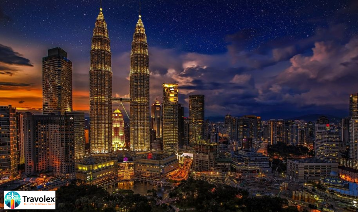

25 July
In 2025, Kuala Lumpur remains one of Asia’s most dynamic and welcoming cities—where skyscrapers meet spiritual shrines, bustling markets buzz with life, and every local greets you with a smile. As Malaysia’s capital, KL offers a rich tapestry of culture, history, modernity, and warmth, making it a must-visit destination for travelers of all types.
At Travolex, we invite you to experience Kuala Lumpur through the lens of its charm and friendliness—a city where hospitality isn’t just a gesture, it’s a way of life.
Why Visit Kuala Lumpur in 2025?
Kuala Lumpur isn’t just a stopover; it’s a destination in its own right. Whether you're
traveling solo
, with family, or on a romantic escape, KL caters to every interest and budget. The city is known for:Top Things to Do in Kuala Lumpur
- Marvel at the Petronas Twin Towers No visit to KL is complete without standing beneath the towering Petronas Twin Towers, once the tallest buildings in the world. Visit the skybridge and observation deck for unbeatable city views, especially at sunset.
- Explore the Batu Caves Just 20 minutes from the city, the Batu Caves are a sacred Hindu pilgrimage site. A massive golden statue of Lord Murugan greets visitors, while 272 colorful steps lead up to a temple inside a limestone cave.
- Stroll through Merdeka Square & Colonial KL Step back in time at Merdeka Square, where Malaysia declared independence in 1957. Explore Sultan Abdul Samad Building, the National Textile Museum, and nearby Masjid Jamek, KL’s oldest mosque.
- Get Lost in the Bustle of Jalan Alor When night falls, head to Jalan Alor, the heart of KL’s street food scene. From smoky satay skewers to spicy char kway teow, this is the place to eat like a local.
- Discover Cultural Harmony at Thean Hou Temple Perched on a hill with city views, Thean Hou Temple is one of the largest Chinese temples in Southeast Asia. It’s a stunning blend of traditional architecture, feng shui design, and peaceful vibes.
- Shop Till You Drop Kuala Lumpur (KL) is a shopper’s paradise, offering everything from luxury malls to vibrant street markets. For those seeking high-end brands and premium retail experiences, Pavilion KL is the go-to destination, featuring a wide range of international designer labels. If you're looking to combine sightseeing with shopping, Suria KLCC is perfectly located near the iconic Petronas Twin Towers and offers a great selection of souvenirs, fashion, and dining. For a more local experience, head to Petaling Street in Chinatown, where you’ll find street bargains, knock-off goods, and a bustling atmosphere full of character and cultural flair.
- The Malaysian Hospitality Factor What sets
- Where to Stay in Kuala Lumpur Whether you're traveling on a budget or looking for luxury, Kuala Lumpur (KL) offers accommodation options for every type of traveler. Budget-friendly choices like The Bed KLCC and Mingle Hostel provide comfort and convenience without breaking the bank. For those seeking a balance between value and style, mid-range hotels such as Hotel Stripes and CitizenM Bukit Bintang offer modern amenities in central locations. If luxury is what you're after, look no further than The Majestic Hotel, Mandarin Oriental, or Banyan Tree Kuala Lumpur—each offering exceptional service and upscale experiences. Best of all, these accommodations are well-connected by public transport and situated close to KL’s major attractions.
Kuala Lumpur
apart from other capitals is its people. Malaysians are famously warm, respectful, and eager to help. Whether it’s a food vendor recommending what to try or a stranger giving directions with a smile, the Malaysian hospitality leaves a lasting impression.Final Thoughts: A City That Welcomes You In
In a world of fast-paced travel and rushed itineraries, Kuala Lumpur is a place that invites you to slow down and feel at home. The city’s blend of tradition, modernity, and sincere friendliness makes it one of the
most memorable places to visit in 2025.
At Travolex, we believe travel is about connection—and Kuala Lumpur offers exactly that. So whether you're exploring solo or with loved ones, KL will greet you with a warm “Selamat Datang” (Welcome).